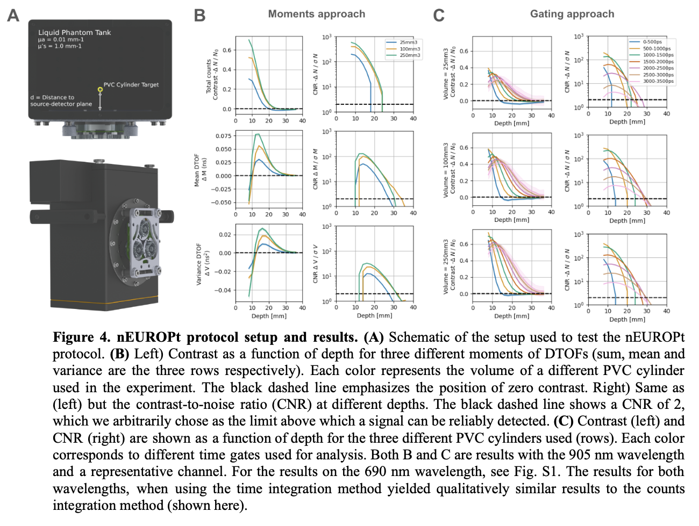
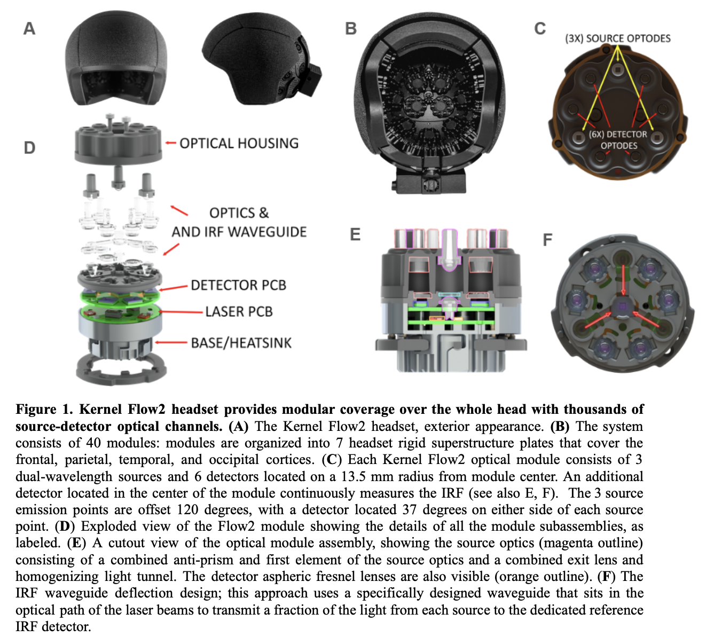

Kernel Evaluation#
We are currently evaluating the Flow2 by Kernel as a potential new neuroimaging device to acquire hyperscanning data for the Consortium for Interacting Minds
This website will share information with members of our community about how to acquire and analyze the data. We recommend reading the Kernel preprint on the validation and reliability of the Flow2 system.
Time Domain Functional Near Infrared Spectroscopy (TD-fNIRS)#
Time-Domain Near-Infrared Spectroscopy (TD-NIRS) is an advanced non-invasive technique used to measure the optical properties of biological tissues, primarily for medical and physiological studies. Near-infrared light can penetrate several centimeters into biological tissues, making TD-NIRS suitable for monitoring deep tissue and brain activities. Unlike more traditional continuous wave (CW) systems that only measure relative changes in light intensity, TD-fNIRS systems use short pulses of light and detectors capable of measuring single photons to capture a distribution of times of flight (DTOF) of photons. This allows TD-fNIRS to measure signals deeper in the brain to quantify absolute concentrations of chromophores such as oxyhemoglobin (HbO) and deoxyhemoglobin (HbR).
Quantitative Information:#
TD-fNIRS uses time gating to discriminate the photons arriving to the detector as a function of their time of flight. As photons traveling longer distances are more likely to have reached deeper layers of the tissue, TD-fNIRS has increased sensitivity to the brain hemodynamics when longer-traveling photons are selected. However, this advantage over CW fNIRS is limited in real instrumentation by the instrument response function (IRF), which causes a broadening of the DTOF, complicating the interpretation of the time gates. Moment analysis of the DTOF, which is relatively immune to the IRF, has been proposed as an alternative to time gates analysis in TD-fNIRS. Higher statistical moments of the DTOF present increased sensitivity to deeper tissue layers compared to signal intensity changes as the kernel for the moment calculation grows as a function of the time of flight. A common way to summarize information from time-of-flight histograms is to compute the first three moments of the histogram corresponding to the total counts (sum), mean time-of-flight (first moment), and variance of the times of flight (second central moment).

Flow 2#
The Kernel Flow2 is an advanced time-domain functional near-infrared spectroscopy (TD-fNIRS) system designed for brain imaging. It uses time gating to discriminate photons based on their time of flight, potentially increasing sensitivity to brain hemodynamics compared to continuous-wave fNIRS, especially when selecting longer-traveling photons.
The system consists of 40 modules arranged in a headset covering frontal, parietal, temporal, and occipital cortices. Each module contains 3 dual-wavelength sources and 6 detectors, plus a central detector for continuous instrument response function (IRF) monitoring. Channels represent one source-detector pairing, which measure signal at different distances. Within a single module, channel distances are 8.5mm (6 source-detector pairs), 17.9mm (6 source-detector pairs), and 26.5mm (6 source-detector pairs), for a total of 18 dual-wavelength channels within a module. It is possible to increase the density of channels by also considering between module source-detector channels. For example, the density of channels can be increaed to 2,565 possible channels with a source-detector separation of ≤ 50 mm, or up to 3,583 when considering distances ≤ 60mm.
The module optics are carefully designed to conduct laser light into the scalp and couple returning light to detectors. They use spring-loaded light pipes to conform to head curvature and reduce interference from hair. Each light pipe is optically isolated to prevent crosstalk. The source optics use a two-lens system with integrated micro-prisms to direct and homogenize light. Similarly, the detector optics use a two-lens system to maintain constant received optical intensity regardless of spring compression.
A critical feature is the continuous IRF monitoring. Each module has a dedicated IRF detector that captures light directly from the lasers without passing through tissue. This provides reliable estimates of IRF contributions from both detectors and lasers, helping to account for variations due to temperature and voltage changes.
The system uses temporal multiplexing of lasers to avoid optical crosstalk. It operates in a 38-state pattern, completing a full cycle of data collection for all modules and wavelengths every 76 histograms. This results in a system sampling frequency of 3.76 Hz, with each source operating at 7.52 Hz in the full headset configuration. The integration time for constructing histograms is set at 3.5ms, allowing for a histogram sampling rate of 285.7 Hz per wavelength.
The Flow2 system incorporates custom-designed detector ASICs with integrated time-to-digital circuitry, capable of handling high photon count rates exceeding 5 Gcps. A novel band-pass coating on the detector packages helps filter out unwanted wavelengths, optimizing signal-to-noise ratio.
